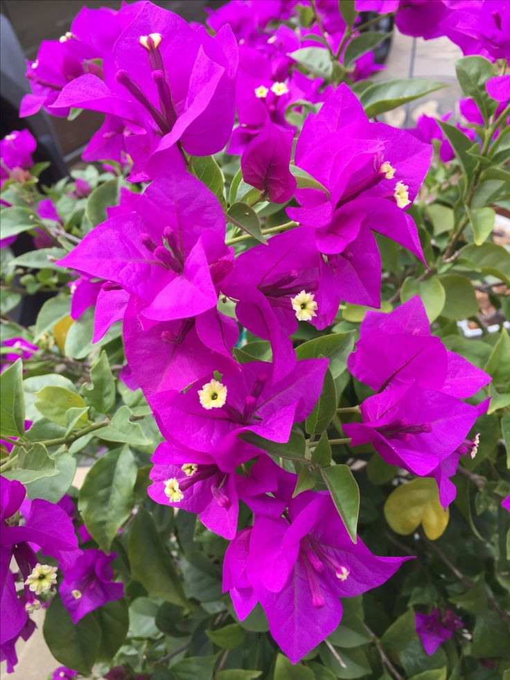

TRINITARIAS
Bougainvillea spectabilisLa Trinitaria, conocida científicamente como Bougainvillea, es originaria de América del Sur, específicamente de Brasil. Sin embargo, se ha extendido a muchas regiones tropicales y subtropicales en todo el mundo debido a su belleza y resistencia.
DESCRIPCION
La Trinitaria es una planta trepadora o arbusto vigoroso que se destaca por sus vibrantes brácteas de colores brillantes que rodean sus pequeñas flores blancas o amarillentas. Estas brácteas pueden ser de varios colores, como rojo, rosa, naranja, púrpura o blanco, lo que le confiere una apariencia llamativa y colorida.